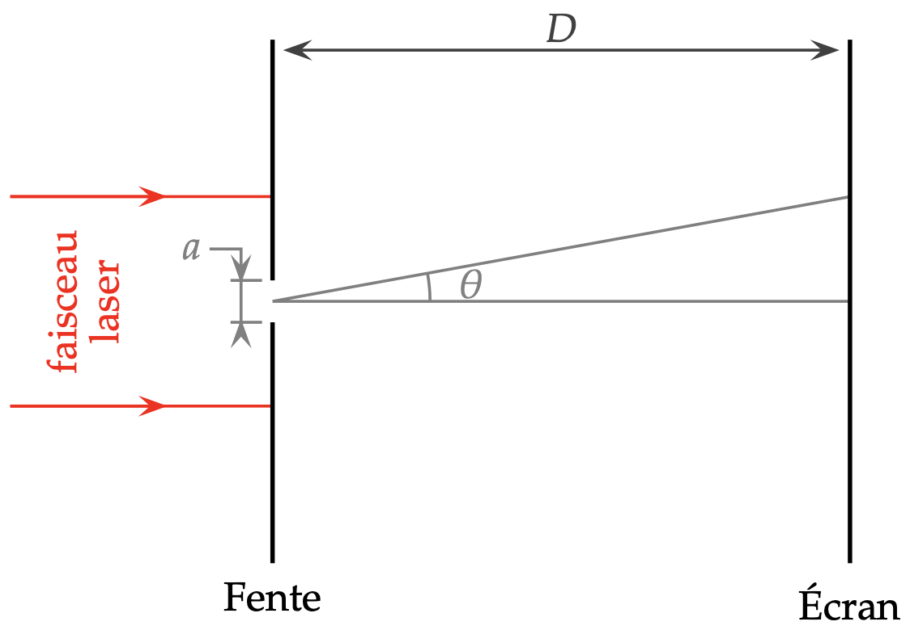
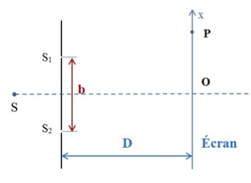
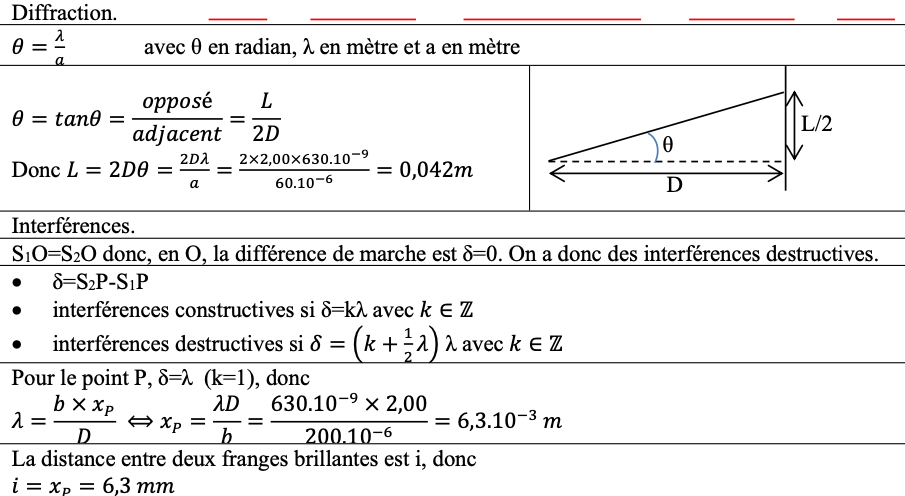

Ondes
Onde sonore
Formulaire
-
\[\lambda = c \times T\]
- \(\lambda\) longueur d'onde en m, \(c\): vitesse de propagation de l'onde en \(m/s\) et \(T\): période de l'onde en \(s\).
- I Intensité sonore: en \(W/m^2\)
- L Niveau sonore en dB
-
\[L=10. \log{\frac{I}{I_0}} \quad\text{et}\quad I=I_0\times 10^{L/10}\]
- \(I_0=10^{-12}\:W/m^2\) seuil d'audibilité
- Relation Puissance, intensité et surface S de l'onde sonore: \(\(I=\frac{P}{S}\)\)
Exercice 1
- Calculer le niveau d'intensité sonore correspondant à une intensité sonore de \(7,3.10^{-5}\:W/m^2\)
- Un DJ est exposé à une ambiance sonore de 95 dB. Afin de protéger ses oreilles il utilise des bouchons d'oreilles dont l'atténuation est de 26 dB. a. Calculer le niveau sonore perçu. b. En déduire l'intensité sonore perçue.
Correction
- \(L=10 \log \frac{I}{I_0}=10 \log \frac{1,2.10^{-7}}{10^{-12}}=50,8\) dB
- a. A= 95-26=69 dB b. \(I=I_0.10^{L/10}=10^{-12}.10^{69/10}=7,9/10^{-6} \:W/m^2\)
Exercice du BAC
Ondes Lumineuses
Formulaire
- Diffraction: éparpillement de l'onde après qu'elle a franchi un obstacle \(\(\theta=\frac{\lambda}{a}\)\)
- \(\theta\) en rad, \(\lambda\) en mètre et a en mètre aussi
- Interférences constructives: \(\delta= k\times \lambda\)
- Interférences destructives: \(\delta= (k+\frac{1}{2}) \times \lambda\)
Savoir prouver que \(\theta = \frac{L}{2D}\) Prédire comment évolue le phénomène de diffraction lorsque a varie (idem lorsque \(\lambda\) varie)
Exercice 2
Partie 1

On envoie un faisceau laser de longueur d'onde \(\lambda=630\) nm à travers une fente de largeur \(a = 60\:\mu\)m. On place un écran (E) à une distance D=2,00 m de la fente.
- Comment se nomme le phénomène mis en évidence par cette expérience ? Représenter sans souci d'échelle, l'allure de la figure observée sur l'écran.
- Rappeler la formule qui relie \(\lambda\), \(a\) et \(\theta\). Préciser les unités de chacune des grandeurs.
- Calculer la largeur de la tache centrale observée à l'écran. \(\theta\) étant petit devant 1, on utilisera l'approximation \(\theta\approx\tan \theta\).
Partie 2
\(S_1\) et \(S_2\) sont deux ondes lumineuses en phase et de longueur d'onde \(\lambda = 630\) nm. La distance \(S_1S_2=b=200\:\mu\)m. La distance entre les fentes et l'écran est D=2,00 m. On note P la première frange brillante située au-dessus de O. On note \(x_P\) l'abscisse du point P.

- Comment se nomme le phénomène mis en évidence par cette expérience ?
-
Justifier que l'on observe des interférences constructives au point O de l'écran.
-
Exprimer la différence de chemin optique \(\delta\) au point P en fonction de \(S_1P\) et \(S_2P\). A quelle condition sur \(\delta\) observe-t-on des interférences constructives en P ? A quelle condition sur \(\delta\) observe-t-on des interférences destructives en P ?
Sachant que pour un point d'abscisse \(x\) sur l'écran, la différence de chemin optique \(\delta\) vaut:
4/ Calculer l'abscisse \(x_P\) de la frange brillante située en P.
5/ En déduire l'interfrange \(i\).
Correction
